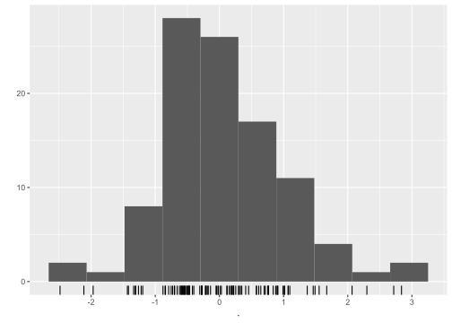
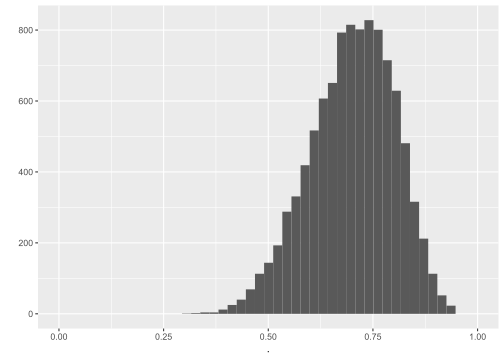

The WJSmisc package is set of functions I find convenient to have readily available to me.
Installation
You can install the development version from GitHub with:
# install.packages("remotes")
remotes::install_github("wjschne/WJSmisc")
Correlation heat maps
library(simstandard)
model <- "
A =~ 0.71 * A_1 + 0.91 * A_2 + 0.85 * A_3
B =~ 0.65 * B_1 + 0.90 * B_2 + 0.75 * B_3
A ~~ -0.2 * B
"
d <- sim_standardized(
model,
latent = FALSE,
error = FALSE)
cor_heat(d, margins = 0.1)Factor Analysis Loading Plot
psych::fa(d, nfactors = 2, fm = "pa") %>%
plot_loading(factor_names = c("A", "B"))
Composite covariance
# Create covariance matrix
Sigma <- matrix(0.6, nrow = 5, ncol = 5)
diag(Sigma) <- 1
# Create weight matrix
w <- matrix(0, nrow = 5, ncol = 2)
w[1:2,1] <- 1
w[3:5,2] <- 1
w
#> [,1] [,2]
#> [1,] 1 0
#> [2,] 1 0
#> [3,] 0 1
#> [4,] 0 1
#> [5,] 0 1
# covariance of weighted sums
composite_covariance(Sigma, w)
#> [,1] [,2]
#> [1,] 3.2 3.6
#> [2,] 3.6 6.6Correlation Ellipse
cor_ellipse(0.75) %>%
ggplot(aes(x,y)) +
geom_polygon(alpha = 0.5) +
coord_fixed()Split at x = 1
cor_ellipse(0.75, split_x = 1) %>%
ggplot(aes(x,y)) +
geom_polygon(aes(fill = group), alpha = 0.5) +
coord_fixed()
Split at x = 1 and y = 0
cor_ellipse(0.75, split_x = 1, split_y = 0) %>%
ggplot(aes(x,y)) +
geom_polygon(aes(fill = group), alpha = 0.5) +
coord_fixed()
Every combination of 2 or more vectors
cross_vectors(c("a", "b"),
c("x", "y"),
c(1,2),
sep = "_")
#> [1] "a_x_1" "a_x_2" "a_y_1" "a_y_2" "b_x_1" "b_x_2" "b_y_1" "b_y_2"z-score
Like the scale function except that it returns a plain vector instead of a matrix with attributes. It can also return z-scores based on a user-specified means and standard deviations.
x <- rnorm(100, mean = 100, sd = 15)
# z-score with sample mean and sample sd
x2z(x) %>%
qplot(bins = 10) +
geom_rug()
# z-score with user-specified population mean and sd
x2z(x, mu = 100, sigma = 15) %>%
qplot(bins = 10) +
geom_rug()
# Will center score at sample mean if sigma = 1
x2z(x, sigma = 1) %>%
qplot(bins = 10) +
geom_rug()Attach function argument defaults to global environment
When debugging a function with many default arguments, it is useful to assign the default values to the variables in the global environment.
my_function <- function(x = 1, y = 2) {x + y}
attach_function(my_function)
x
#> [1] 1
y
#> [1] 2
Convert an angle to ggplot2 hjust and vjust parameters
Control placement of labels with the angular position by converting an angle to hjust and vjust parameters.
tibble(degrees = seq(0, 345, 15),
radians = degrees * pi / 180,
x = cos(radians),
y = sin(radians),
hjust = angle2hjust(radians),
vjust = angle2vjust(radians)) %>%
ggplot(aes(x, y)) +
geom_segment(aes(x = 0, y = 0, xend = x, yend = y), size = .1) +
geom_label(aes(label = degrees,
hjust = hjust,
vjust = vjust),
label.padding = unit(1, "mm"),
label.size = 0) +
geom_point() +
coord_fixed(1, clip = "off") +
theme_void()I use these functions to make sure that labels on a curve are perpendicular to the curve:
# Small change in x
dx <- .000001
plot_ratio <- 16
tibble(x = seq(-4,4),
y = dnorm(x),
l = WJSmisc::prob_label(pnorm(x), digits = 2),
slope = plot_ratio * (dnorm(x + dx) - y) / dx,
angle = atan(slope) + pi / 2,
hjust = angle2hjust(angle),
vjust = angle2vjust(angle)) %>%
ggplot(aes(x, y, label = l)) +
geom_point() +
stat_function(fun = dnorm) +
geom_label(aes(hjust = hjust,
vjust = vjust),
label.size = 0) +
coord_fixed(plot_ratio, clip = "off") +
theme_minimal()Formatting probability values
Probabilities near 0 and 1 are rounded differently.
p <- c(0,.0012, .025, .5, .99, .994, .99952, 1)
prob_label(p, digits = 2)
#> [1] "0" ".0012" ".025" ".50" ".99" ".994" ".9995" "1"
prob_label(p, accuracy = .01)
#> [1] "0" ".00" ".02" ".50" ".99" ".99" "1.00" "1"
proportion_round(p)
#> [1] 0.0000 0.0010 0.0300 0.5000 0.9900 0.9940 0.9995 1.0000
proportion2percentile(p, add_percent_character = TRUE)
#> [1] "0%" "0.1%" "3%" "50%" "99%" "99.4%" "99.95%" "100%"Sizing text in ggplot2
Text size in geom_text and geom_label does not use the same units as the rest of ggplot2.
I use the ggtext_size function so that text from geom_text will be the same size as the axis labels.
mytextsize <- 24
tibble(x = 1:5, y = x) %>%
ggplot(aes(x, y)) +
geom_text(aes(label = x), size = ggtext_size(mytextsize)) +
theme_gray(base_size = mytextsize) +
coord_equal()Random beta distributions with specific means and standard deviations.
Sometimes I need random variables with values between 0 and 1. To get a beta distribution that I want, there is less trial-and-error if I specify the mean and standard deviation rather than 2 shape parameters. Note that not all combinations of means and standard deviations are possible.
